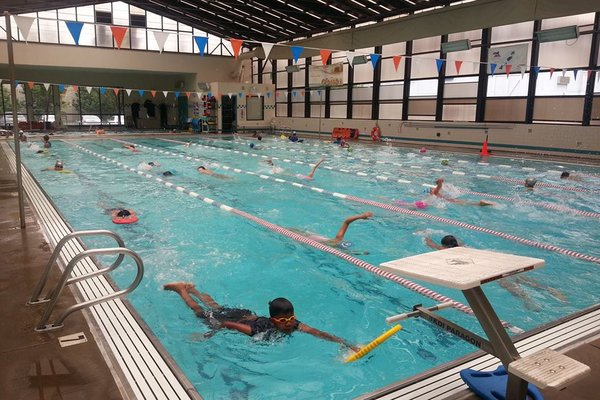

Kelly Chen
Currently, I work as a takeout specialist and hostess at Red Lobster. I have served 50-100 customers per shift at a national chain restaurant, memorized over 50 menu items and rotating specials in order to give customized recommendations to the guest, and swiftly and successfully resolved conflict resulting in customer satisfaction 100% of the time. During each shift, I have warmly greeted new and returning customers and developed relationships resulting in customer loyalty. During the COVID-19 pandemic, I have maintained and enforced strict and up-to-date cleanliness and social distancing policies regarding the COVID-19 outbreak to ensure both employee safety and customer satisfaction.
Before working at Red Lobster, I was a barista, bar supervisor, and cashier at a family owned restaurant. I memorized over 100 drinks and their recipes as well as variations on each drink in order to give recommendations to customers based on their preferences. I took orders and learned the ordering system quickly all while producing 300-700 high quality, made to order drinks per shift. As a supervisor, I kept the bar running smoothly and delegated tasks to my teammates while also coordinating bulk drink orders of up to 500 drinks each.
While working as a barista, I was also a swim coach. At this job, I taught classes of up to ten children from beginner to advanced levels, and communicated with their parents about their progress and needs. I stayed up-to-date on rules and regulations of the sport in order to ensure that my students learned the correct way to compete, and I also comforted children who were afraid of jumping into the water for the first time.
Experience
takeout specialist
• Took customer orders
• Packaged and delivered orders quickly and efficiently
• Resolved conflicts to ensure customer satisfaction
Swim Coach
• Ran sessions to help students learn how to swim
• Communicated with parents regarding student progress
• Resolved conflicts between and with students
• Taught over 40 students each quarter
Education
University of California Riverside
Portfolio
